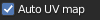

Preferences
To go to the preferences, you can go in 2 ways:
Easier directly from the addon (If installed and enabled)

From Blender:

Search into Addon tab, the “Extreme PBR” addon:

Library Management
“Library Management”, allows you to link or change paths to Extreme PBR libraries. You can also add expansion libraries later. If you want to delight in creating libraries to sell, your customer will find the “Add Library” button useful, you can add many libraries, without limit.
Note
To work, Extreme PBR needs to have linked (Installed) the main library, and the user library (Even if empty)

Options
Click the Options tab to customize the Extreme PBR panel.


Show name label in preview button
If enabled, the name of the material will be displayed in the preview popup

{kind=link}
{kind=link}
{kind=link}
{kind=link}
{kind=link}
{kind=link}
{kind=link}
Auto Uv Map
{kind=link}
If the object does not have a Uv Mapping once the material has been added, a default UV mapping will automatically be added. (it is advisable to leave this button active so as to avoid wasting time). Objects that have a UV mapping will not be automatically bypassed
Safety Paint Uv Map
{kind=link}
Prevents the uv layer of the texture paint from being selected if you are not in Texture Paint Mode
Smart Texture Limiter
{kind=link}
Due to the maximum texture limit of 24 for Eevee, this feature (Enable by default) attempts to limit the use of textures when a material has many Shaders and Fx layers. Cons: Some maps may be disabled, starting from the Fx Layers Modules, then moving on to the Modules
Anti Crash
{kind=link}
One some computers, there is an abnormal crash when adding a material. The bug has been reported to the Blender Foundation, until the cause is understood, keep this active if you encounter any abnormal crashes applying the materials.
{kind=link}
Show Creator Utility
{kind=link}
Show in the Shader Editor, a panel for material and library creators. If you are not a material creator, please do not use this as it may damage the main library.
Findo Lost Images
{kind=link}
This is used to search for any lost images, in case Blender appears with “Pink” materials, this means that the textures to which the material refers have not been found. The cause may be that the files have been moved or renamed.
This button opens a popup where to enter a path where to perform the automatic search for lost images.
{kind=link}
Update
Important
To use the functions in this menu, you must be logged in with your profile in the “Extreme Addons” Tab menu
In this Tab menu, you will be able to update the libraries and addon
- Update core:
Update the addon directly, without having to do the classic Blender manual procedure.
- Update Library:
If you want to check if there are new materials to install, first press this button, your library will automatically update if there is any new material online.
- Essential/1k/2k/4k/8k/All:
They are the same buttons present in Step 5 (Go a few pages up to see)